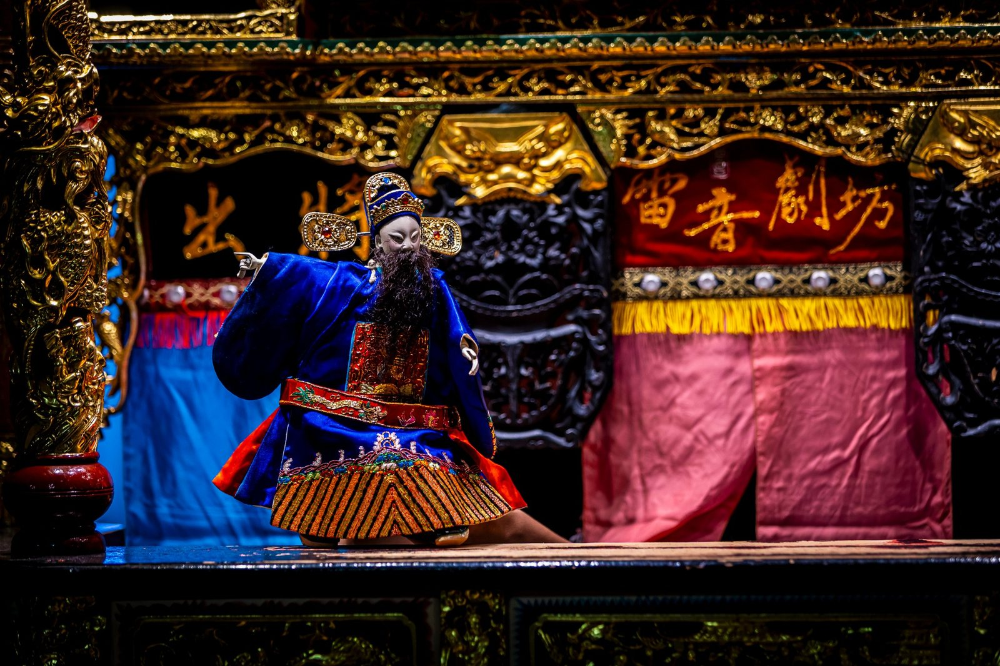

Traditional Glove Puppetry · 經典傳說
《沉香救母》
About the work
作品介紹
故事改編自《寶蓮燈》的經典傳說，描寫二郎神之妹楊三娘與杭州府正堂劉錫締結人神之戀。二郎神震怒之下，將三娘囚禁於華山風雷水火洞。十六歲月轉瞬即逝，三娘與劉錫之子劉沉香已成長為英俊剛毅的青年。
劉錫偶然向沉香吐露母親被禁之事，沉香遂拜師霹靂大仙，苦習武藝，立志有朝一日救出母親。本劇取自李天祿大師口述劇本中的傳統「教孝戲」精神，在傳統故事基礎上融入嶄新詮釋與青春視角，尤其在「沉香懇求母舅、誤毀神像」一段，以詼諧手法與青年血氣的叛逆感呈現，讓作品在笑聲與感動之間傳遞親情與孝心。
Production stills
演出劇照
2026 大稻埕戲苑演出紀錄。攝影：張瑞宗／雷音劇坊提供。
